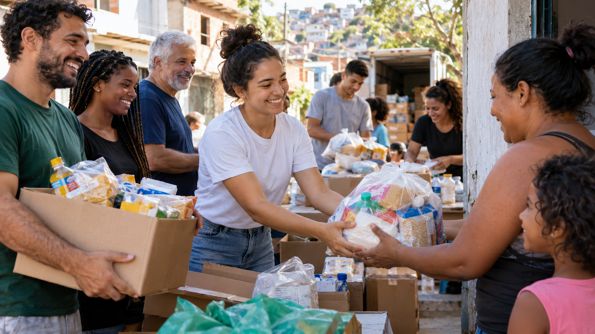

ONG Esperança
A ONG Esperança é uma organização social dedicada ao desenvolvimento de ações solidárias e ao apoio de pessoas e famílias em situação de vulnerabilidade.

Quem somos
Desenvolvemos projetos sociais com o apoio de voluntários, parceiros e doadores que acreditam na importância da solidariedade e da transformação social.
Nossa missão
Nossa missão é contribuir para a melhoria da qualidade de vida das comunidades atendidas, promovendo ações de assistência, inclusão, solidariedade e participação social.
Como ajudar
Existem diferentes formas de participar das ações da ONG Esperança. Você pode contribuir através de doações ou participar diretamente como voluntário.
Conheça nossos projetos sociais ou realize seu cadastro como colaborador.
Entre em contato
E-mail: contato@ongesperanca.org
Telefone: (11) 94002-8922
Rua Tchurusbango Thurusbago, 234 - São Paulo - SP